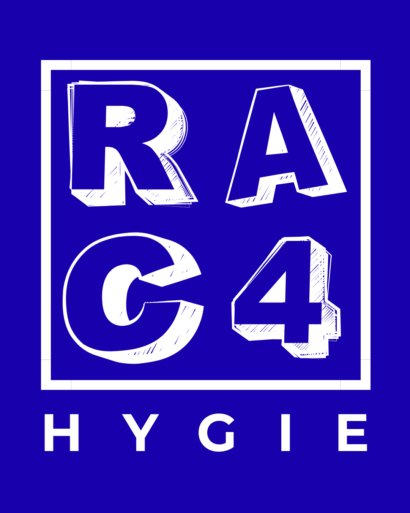

Alex
- HEAT 4 Lane 310:10 – 11:30HF MIXTELes chats noirs Hygie raceElise Bailly · Briant Thomas
- HEAT 6 Lane 311:35 – 12:55HH OPENTrop grands pour toi AucunSeys Romain · Deldalle Clément

Dimanche 4 octobre 2026, de 7h30 à 13h30, à CrossFit Hygie.
Trouve ton nom ci-dessous : tu y vois tes heats, ta lane, tes horaires et l'équipe que tu juges.
Tu cours le heat 6 : pas de jugement autour de ta course.
Tu cours le heat 6 : pas de jugement autour de ta course.
Tu cours le heat 6 : pas de jugement autour de ta course.
| HEAT 1 | HEAT 2 | HEAT 3 | HEAT 4 | HEAT 5 | HEAT 6 | HEAT 7 | |
|---|---|---|---|---|---|---|---|
| Division | FF OPEN | FF OPEN - FF PRO | HF MIXTE | HF MIXTE | HF MIXTE - Homme Open | HH OPEN | HH PRO |
| Warm-up | 07:35 | 08:20 | 09:00 | 09:45 | 10:25 | 11:10 | 11:50 |
| Call room | 07:55 | 08:40 | 09:20 | 10:05 | 10:45 | 11:30 | 12:10 |
| Heat | 08:00 – 09:20 | 08:45 – 10:05 | 09:25 – 10:45 | 10:10 – 11:30 | 10:50 – 12:10 | 11:35 – 12:55 | 12:15 – 13:35 |
| Lane 1 | Luc Choteau GURLZ | Romain De Bels Les aventurières | Léo de Beaurepaire Qui a inscrit qui? | Justine Hoffmann Team Madma | Luc Choteau La belle et la bête | Justine Hoffmann Il est (enfin) majeur | Sarah Trenson MedAlex |
| Lane 2 | Florian Carette Dum’belles | Elise Bailly Marie & Sara | Florian Carette GuillauTine | Hélène Guaguere Zel & Kev | Améline Hego Les pénouilles | Elise Bailly Tendinites & Co | Améline Hego Les Tuches, le retour du retour !! |
| Lane 3 | Cédric Degand Wod else | Nathalie Destrebecq WomanRiser | Cédric Degand Team communication | Alex Les chats noirs | Mathias Les Hobbits Joufflus | Alex Trop grands pour toi | Nathalie Destrebecq Ne m'attends pas, je te rejoins. |
| Lane 4 | Laëtitia Debruyne BOSS LADIES | Jordann Chmielewski Ah… fallait courir ?😅 | Laëtitia Debruyne Les zinzins | Sarah Trenson La ramasse | Pierre Francois je refile les burpees à ma partenaire 2 | Hélène Guaguere Jptp | Marine Bar PR ou PLS |
| Lane 5 | Amélie Lorek TEAM FEMINAFIT | — | Amélie Lorek Les Champins | Nathalie Destrebecq Le coach et la bête | Laëtitia Debruyne Felicien MAHIET | Amélie Lorek Casseurs Flotteurs | Pierre Francois B. Pitt & T. Cruise (enfin, Bernard Pitt & Thierry Cruise...les vrais avaient des choses plus intéressantes à faire que des burpees et des 200m. Nous, visiblement, on avait du temps à perdre). |
| Lane 6 | Léo de Beaurepaire Les cœurs de bœuf | — | Mathias Faites Comme Si On Était Bons | Jordann Chmielewski QAKC | Marine Bar Jean-Baptiste LOMENECH | Romain De Bels Les Faux-ssoyeurs | Jordann Chmielewski Fléo |